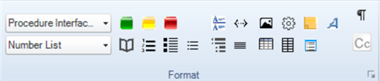
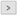

When you first install Author-it, the Format ribbon includes the style drop-down lists. In this configuration, to apply a style you have to select it from one of the lists. If you're applying a lot of styles, this a a time-consuming and inefficient process. A better solution is to add custom icons and assign hot keys to different styles. This enables you to either click an icon or press a hot key and quickly assign a style. The following graphic shows a ribbon with customized style icons:

For more information about ribbons in Author-it, refer to this resource:
Ribbons, tabs, and commands (Author-it Knowledge Center)
Complete the following to customize the Format ribbon:
In the book editor, click the expand ribbon icon () at the bottom right of the Format ribbon. The Customize Styles Toolbar dialog box opens.
Locate the style in the All styles list and click the right arrow () to move the style to the Toolbar styles list.
(Optional) To remove a style, select the style in the Toolbar styles list and click the left arrow ().
(Optional) Use the Move Up and Move Down buttons to move the style up and down in the list.
(Optional) Move a separator from the All styles list to the Toolbar styles list and position it to separate styles. This creates groups of styles.
Note: The separator also creates a row break. The icon order is top row > separator > bottom row > separator > top row.
(Optional) To copy a toolbar from another user, do the following:
Select the user in the Copy toolbar from another user drop-down list.
Click Copy.
Click OK.